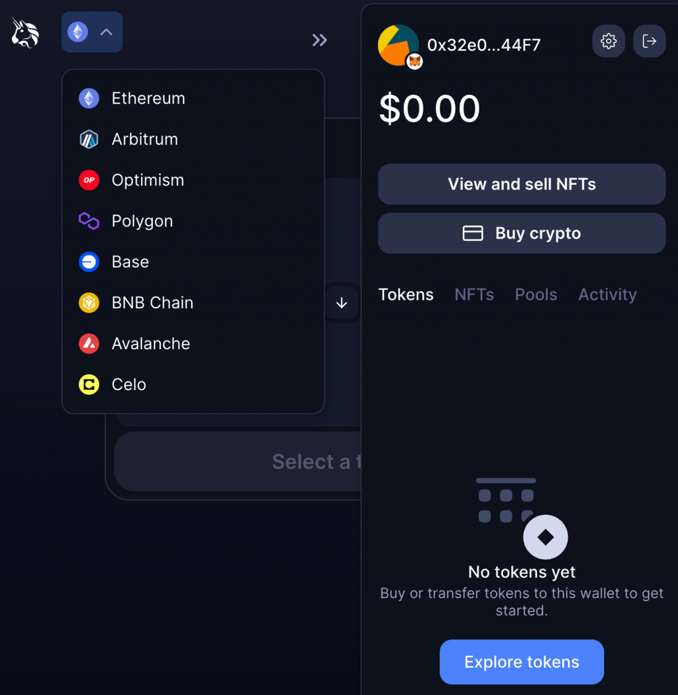
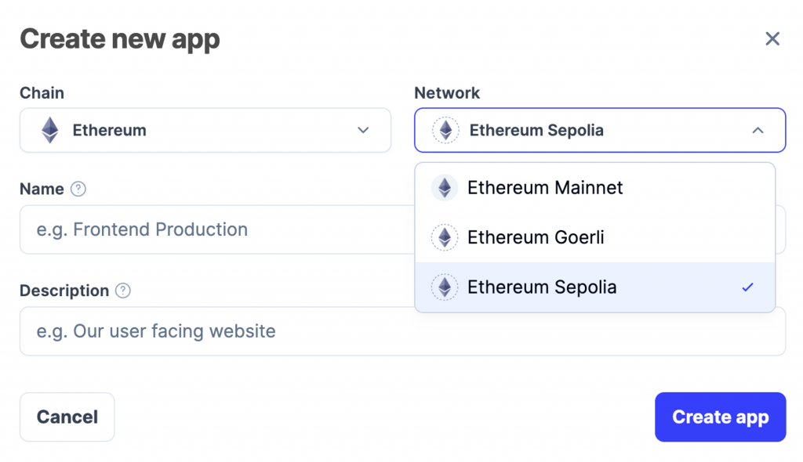
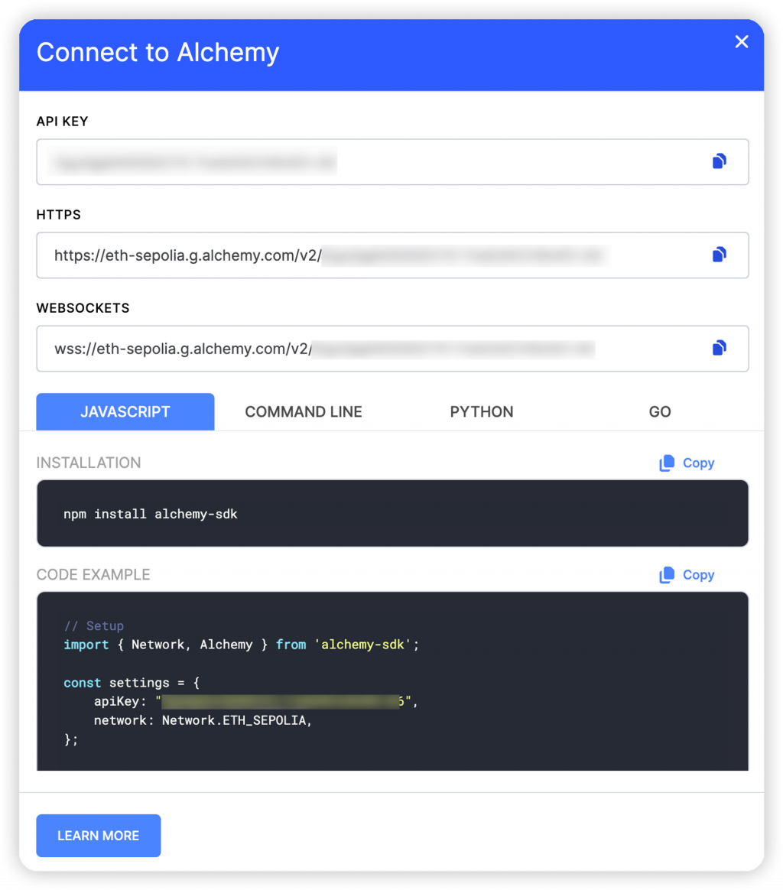
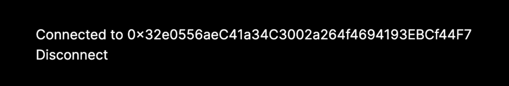
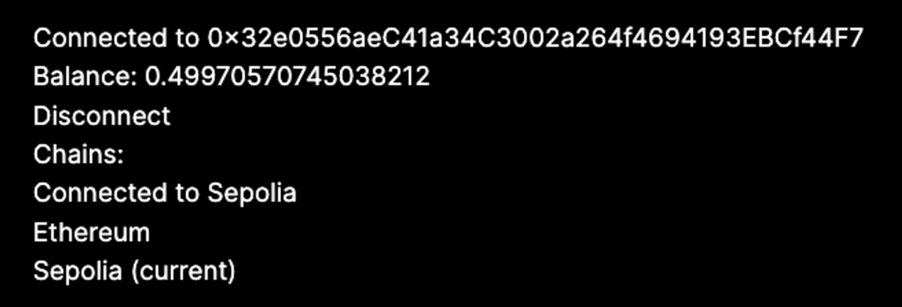

今天我們會用 React 實作一個最簡單的去中心化應用，也就是 Decentralized App（簡稱 DApp）。許多區塊鏈應用之所以只需要前端的技術，是因為可以直接把區塊鏈本身當成後端來用，因為區塊鏈就支援讀寫的操作。
對於「讀取」操作可以透過區塊鏈的節點服務提供商，得到區塊鏈上的即時資料。對於「寫入」操作則可以透過發送一個交易請求給錢包，讓使用者在錢包內確認交易後，把交易送到區塊鏈節點，等待交易被寫入區塊鏈。由於請求的格式都是 JSON RPC，所以節點也被稱為 RPC Node。
上面提到不管是讀取或寫入操作，都會依賴「區塊鏈節點」服務提供商，因此他們是區塊鏈應用中非常重要的角色。回顧我們之前提過的概念：
區塊鏈的本質其實就是一個帳本，紀錄著每個帳戶（也就是地址）上持有多少資產的資訊。比較特別的是這些資訊會被公開並備份到大量的電腦上（我們把它稱為區塊鏈的節點），透過密碼學的機制確保這個帳本是無法竄改的。
當我們想開發一個 DApp 時，如果還要自己架設區塊鏈節點，並且把所有區塊鏈的歷史資料全部同步下來，那勢必會花很高的儲存空間與網路頻寬成本，例如截至今天比特幣的歷史資料已超過 500GB，以太坊則超過 1000GB，而且每個節點要能即時跟其他節點同步資料。因此最簡單的作法是使用別人已經建好的節點服務，而上次介紹的 Alchemy 則是市面上最有名的節點服務提供商之一（另外還有像 Infura、Quicknode 等等），接下來會假設大家已經註冊 Alchemy 服務。另外對自建節點這個主題有興趣的話也可以參考 Ethereum 的 Run a node 教學。
前一天我們操作了測試鏈的 Uniswap，可以看到一進入 Uniswap 介面會有連結錢包的功能，連結上了之後介面會顯示當下錢包地址、連接的鏈、這個地址的餘額，以及點擊鏈的圖示可以切換不同的鏈。今天我們的目標是能把這些功能的雛形完成。

首先到 Alchemy 的 Apps dashboard 建立一個新的 App，這樣才能拿到 API Key 做後續的操作。由於我們會在測試鏈上開發，Chain 跟 Network 就選擇 Ethereum Sepolia，名字隨意填就好

建立後點擊 View Keys 就可以看到這個 App 的 API Key 跟串接的方式，先紀錄 API Key 即可

另外也需要創一個新的前端專案，我個人是使用
pnpm create next-app
指令建立，讀者也可以選擇自己熟悉的套件管理器或 bundler, css
設定等等。
我們會使用 wagmi 這個套件來實作今天需要的功能。wagmi 提供完整的 hooks 可以用來跟錢包、Ethereum 互動，我們就不用自己用更底層的 ethers.js 或 viem 甚至 JSON-RPC 開始寫。安裝方式也很簡單：
[code] pnpm i wagmi viem
[/code]
而因為 wagmi 套件還蠻常改版，有時會造成套件不相容的問題（v1 也是最近才推出），現在我安裝的版本是 viem v1.9.0 以及 wagmi v1.3.10，如果未來看到的介面不同可能是這個原因。
另外有趣的一個小知識是 wagmi 是 We All Gonna Make It 的簡寫，主要是因為 NFT 流行的早期一群早期使用者會很常在 Discord, Twitter 等地方刷 WAGMI 很期待 NFT 項目的前景，就成為了一個 web3 的迷因。
安裝好之後就可以先貼上官方的範例程式碼來使用：
[code] “use client”;
import {
WagmiConfig,
createConfig,
useAccount,
useConnect,
useDisconnect,
mainnet,
} from "wagmi";
import { createPublicClient, http } from "viem";
import { InjectedConnector } from "wagmi/connectors/injected";
const config = createConfig({
autoConnect: true,
publicClient: createPublicClient({
chain: mainnet,
transport: http(),
}),
});
function Profile() {
const { address, isConnected } = useAccount();
const { connect } = useConnect({
connector: new InjectedConnector(),
});
const { disconnect } = useDisconnect();
if (isConnected)
return (
<div>
<div>Connected to {address}</div>
<button onClick={() => disconnect()}>Disconnect</button>
</div>
);
return <button onClick={() => connect()}>Connect Wallet</button>;
}
export default function App() {
return (
<WagmiConfig config={config}>
<main className="flex min-h-screen flex-col items-center justify-between p-24">
<Profile />
</main>
</WagmiConfig>
);
}[/code]
使用 pnpm run dev 跑起來後就可以看到畫面上出現 Connect
Wallet 的字，點擊後就會跳出 Metamask
的連接錢包視窗，同意後畫面上就會顯示錢包地址跟 Disconnect 按鈕了。

用法很簡單，使用 createPublicClient 跟
createConfig 來建立 wagmi config 後，用
<WagmiConfig> 把整個 App
包起來，就可以使用它提供的各種 hooks 了，包含 useAccount,
useConnect 及
useDisconnect，分別對應到拿連接的錢包地址、Connect、Disconnect
的操作。另外可以看到 createPublicClient 中傳入的是 mainnet
代表我們指定要連接以太坊的主網，以及 public client
的意思是使用公開、任何人都可以打的 ETH
節點服務網址，而這種公開服務就會有 rate limit，因此後面我們會把 public
client 改成使用 Alchemy 的服務
接下來我們加上顯示餘額的功能，只要在 Profile() 中使用
useBalance 即可：
[code] // … const balance = useBalance({ address });
if (isConnected)
return (
// ...
<div>Balance: {balance.data?.formatted}</div>
// ...[/code]
完成上述步驟後會看到 Balance 顯示為 0，這是因為我們的地址在以太坊上還沒有 ETH，而是在 Sepolia 鏈上有 ETH，因此接下來我們需要顯示已經連上的鏈跟我們的 DApp 總共支援哪些鏈，並讓使用者可以方便地切換。在這之前順便把 public provider 換成 alchemy provider 來避免後續的 rate limit。把前面宣告 config 的部分改成以下程式碼即可：
[code] import { alchemyProvider } from “wagmi/providers/alchemy”; import { publicProvider } from “wagmi/providers/public”;
const { chains, publicClient, webSocketPublicClient } = configureChains(
[mainnet, sepolia],
[
alchemyProvider({ apiKey: process.env.NEXT_PUBLIC_ALCHEMY_KEY }),
publicProvider(),
]
);
const config = createConfig({
autoConnect: true,
publicClient: publicClient,
});[/code]
並且在 .env.local 檔（會被 git ignore 掉）加上剛才在
Alchemy 拿到的 API Key
[code] NEXT_PUBLIC_ALCHEMY_KEY=key
[/code]
可以看到前面改成用 configureChains 先指定這個 DApp
支援的鏈，以及要用哪些節點服務即可，在 wagmi 套件中是把節點服務稱為
provider。
再來是顯示鏈，從 configureChains 拿到的
chains 就是我們 DApp 支援的鏈，並使用
useNetwork 及 useSwitchNetwork
拿到當下連接的鏈跟切換鏈的 function
[code] import { useSwitchNetwork, useNetwork, } from “wagmi”;
// ...
const { chain } = useNetwork();
const { switchNetwork } = useSwitchNetwork();
// ...
{chain && <div>Connected to {chain.name}</div>}
{chains.map((x) => (
<div key={x.id}>
<button
disabled={!switchNetwork || x.id === chain?.id}
onClick={() => switchNetwork?.(x.id)}
>
{x.name} {x.id === chain?.id && "(current)"}
</button>
</div>
))}[/code]
這樣就能顯示所有 DApp 支援的鏈以及點擊觸發切換鏈的功能了！

另外如果使用者在跳出錢包切換鏈的請求時拒絕，在
useSwitchNetwork 裡也有 error
可以用來顯示拒絕的錯誤訊息，以及 isLoading
代表是否正在切換網路等等。
今天我們實作了一些基本的 DApp 功能，包含連接錢包、顯示地址與餘額、切換鏈等功能。詳細的程式碼會放在這裡，在後續的內容如果有程式碼我也會盡量放到同個 repo 中。接下來我們會持續加入新的功能到 DApp 中。